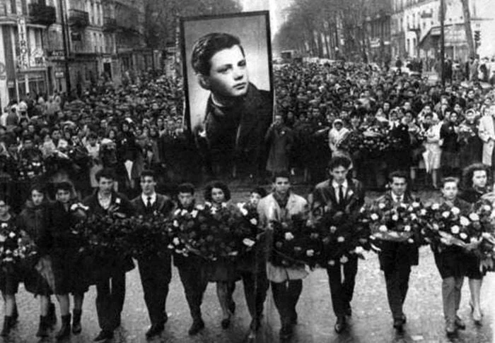
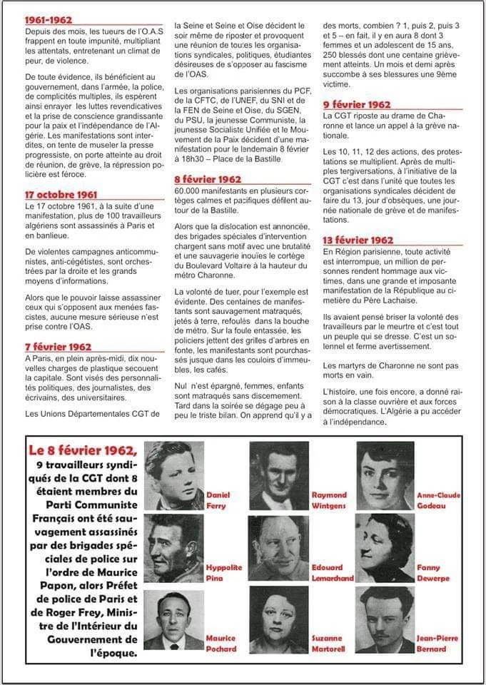
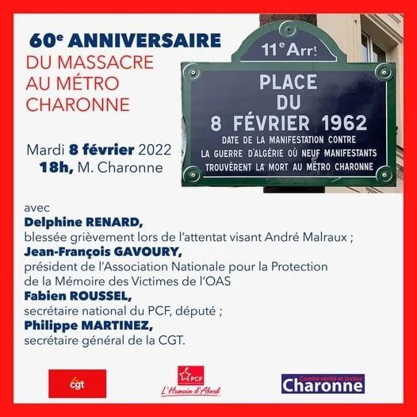

Appel archivé
Charonne. L’appel à commémorer le 60e anniversaire du massacre
Date indiquée par Facebook · 7 février 2022
Repères éditoriaux
Le 8 février 2022 marquait les soixante ans du massacre au métro Charonne. Nous reproduisons l’appel diffusé pour rendre hommage aux victimes.
Texte conservé avec la publication
8 février 2022 - Commémoration du 60e anniversaire du massacre au métro Charonne
Appel à rassemblement à l’initiative du Comité Vérité et Justice pour Charonne.
Le 8 février 1962, 9 travailleurs syndiqués à la CGT dont 8 étaient membres du Parti Communiste Français ont été sauvagement assassinés par les brigades spéciales de police. Ils participaient à une manifestation pacifique qui avait pour mot d’ordre « Contre les crimes et attentats de l’OAS (Organisation de l’armée secrète) et pour le droit à l’autodétermination du peuple algérien ».
Le Comité Vérité et Justice pour Charonne et les organisations signataires de l’appel (ci-dessous) vous invitent au rassemblement :
Mardi 8 février 2022 à 18 heures, métro Charonne, à Paris
avec Delphine Renard, blessée grièvement lors de l’attentat visant André Malraux ; Jean-François Gavoury, président de l’Association Nationale pour la Protection de la Mémoire des Victimes de l’OAS (ANPROVEMO) ; Fabien Roussel, secrétaire national du PCF, député ; Philippe Martinez, secrétaire général de la CGT.
La CGT Ratp rendra hommage aux victimes le même jour à 17h30 dans la station de métro.
Dimanche 13 février à 11h. Dépôt de gerbes au cimetière du Père Lachaise sur
les tombes des victimes (face au mur des Fédérés).
Du 1er au 28 février, parvis de la mairie du 11ème arrondissement, place Voltaire : exposition de la ville de Paris : “Massacre au métro Charonne, le 8 février 1962″.
60e anniversaire du massacre au métro “Charonne” le 8 février 1962
Le 8 février 1962, la manifestation contre les attentats et crimes de l’OAS et pour la paix en Algérie est sauvagement réprimée par la brigade spéciale de police placée sous l’autorité directe du préfet Maurice Papon.
Il sera dénombré 9 morts et des centaines de blessé-e-s.
La veille de cette manifestation, le 7 février, après des centaines d’attentats et d’assassinats, dix plasticages de l’OAS résonnent dans Paris. Dix personnalités favorables à l’autodétermination du peuple algérien sont visées, parmi lesquelles Raymond Guyot, dirigeant du Parti communiste (dont l’épouse est blessée), André Malraux, ministre de la culture (absent, c’est Delphine Renard, une fillette de 4 ans, proche de son domicile, qui est grièvement blessée et deviendra aveugle), Vladimir Pozner, écrivain (blessé).
En riposte, une manifestation est annoncée pour le lendemain à l’appel des syndicats CGT, CFTC, UNEF, FEN et SNI de Seine-et-Oise. Des partis politiques – PCF, PSU – et le Mouvement de la paix s’associent à cet appel.
Des dizaines de milliers de citoyennes et citoyens descendent dans la rue. À la dislocation de la manifestation, au carrefour du métro Charonne, l’agression des forces de police est sauvage, avec une volonté de tuer manifeste.
Alors que 75 % des électrices et électeurs se sont prononcé-e-s par référendum, en janvier 1961, en faveur du droit du peuple algérien à l’autodétermination, les atermoiements de De Gaulle confortent l’OAS, les ultras “Algérie française” et l’extrême droite.
Le 13 février 1962, un million de personnes venues de l’ensemble de la région parisienne et de province assistent aux obsèques des victimes du 8 février dans un immense défilé de la place de la République au cimetière du Père-Lachaise.
Le lendemain, les négociations avec le GPRA reprennent et aboutissent au cessez-le-feu le 19 mars 1962.
Soixante après, la République française doit reconnaître le caractère criminel de la répression, par les forces de l’ordre placées sous l’autorité du préfet de police Maurice Papon, de la manifestation organisée à Paris le 8 février 1962 pour la paix en Algérie et contre l’OAS, qualifiée un mois plus tard par le ministre de l’intérieur Roger Frey d’organisation cherchant à « s’emparer du pouvoir par des méthodes que le régime hitlérien n’aurait certes pas désavouées » et composée de « fascistes » et de « revenants de la collaboration ».
Les signataires vous appellent à prendre part à l’hommage dû aux victimes du 8 février 1962 à l’occasion du 60e anniversaire de leur sacrifice.
Signataires : Agir Contre le Colonialisme Aujourd’hui (ACCA), Association Pour la Mémoire des Victimes de l’OAS (ANPROVEMO), Association Nationale des Pieds Noirs Progressistes et leurs Amis (ANPNPA), Association Républicaine des Anciens Combatants (Arac), CGT, CGT-FAPT, CGT-RATP, GGT-URIF, FIDLycéens, Institut d’Histoire Sociale (CGT), Fédération Syndicale Unitaire (FSU IDF), La Voix Lycéenne, Ligue des droits de l’Homme (LDH), Les Amis de la Commission Centrale de l’Enfance (AACCE), Les Amis de Max Marchand, Mouloud Feraoun et leurs Compagnons, Mouvement de la Paix, Mouvement de la Jeunesse Communiste de France (MJCF), Nouveau Parti Anticapitaliste (NPA), Parti Communiste Français (PCF), Une Autre Voix Juive, Union des Juifs pour la Résistance et l’Entraide (UJRE), Union Nationale des Etudiants de France (Unef).



Sources
Archive rouge · export Facebook · AR-0002-FB-01969
À lire aussi · Charonne. Se souvenir des victimes du 8 février 1962